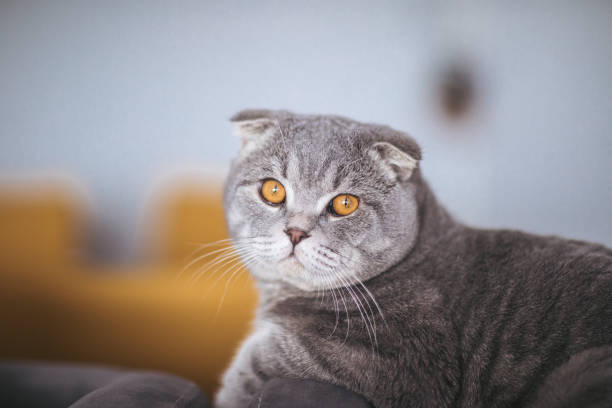

접힌 귀와 동그란 얼굴이 특징인, 다정하고 조용한 성격의 고양이입니다.
앞으로 접힌 귀와 크고 동그란 눈, 그리고 둥글고 단단한 체형이 특징입니다. 성격은 매우 온순하고 조용하며, 사람과 잘 어울리고 애정이 깊습니다.
활동량이 높지 않으므로 과체중이 되지 않도록 식단을 관리해야 합니다. 관절 건강에 도움을 줄 수 있는 영양제를 고려할 수 있습니다.
11년 ~ 15년
보통. 유전적인 관절 질환에 대한 정기적인 검진이 필요하며, 접힌 귀는 정기적으로 청소하여 감염을 예방해야 합니다.
조용하고 편안한 실내 환경을 선호합니다. 관절에 무리가 가지 않도록 높은 곳에 오르거나 뛰어내리는 격한 활동은 자제시키는 것이 좋습니다.

접힌 귀와 동그란 얼굴이 매력 포인트입니다.